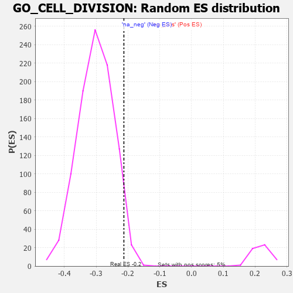

| | | Dataset | 7d |
| Phenotype | NoPhenotypeAvailable |
| Upregulated in class | na_neg |
| GeneSet | GO_CELL_DIVISION |
| Enrichment Score (ES) | -0.2129408 |
| Normalized Enrichment Score (NES) | -0.70582277 |
| Nominal p-value | 0.9673684 |
| FDR q-value | 1.0 |
| FWER p-Value | 1.0 |
Table: GSEA Results Summary
 Fig 1: Enrichment plot: GO_CELL_DIVISION
Fig 1: Enrichment plot: GO_CELL_DIVISION
Profile of the Running ES Score & Positions of GeneSet Members on the Rank Ordered List
| PROBE | GENE SYMBOL | GENE_TITLE | RANK IN GENE LIST | RANK METRIC SCORE | RUNNING ES | CORE ENRICHMENT | | 1 | TGFB3 | | | 49 | 2.654 | 0.0300 | No |
| 2 | TEX14 | | | 164 | 1.179 | 0.0315 | No |
| 3 | BUB3 | | | 172 | 1.143 | 0.0462 | No |
| 4 | DLL1 | | | 337 | 0.760 | 0.0356 | No |
| 5 | CCNB2 | | | 429 | 0.672 | 0.0332 | No |
| 6 | CENPS | | | 439 | 0.666 | 0.0411 | No |
| 7 | CDC20 | | | 480 | 0.644 | 0.0448 | No |
| 8 | KIF23 | | | 522 | 0.622 | 0.0480 | No |
| 9 | CCNB1 | | | 581 | 0.601 | 0.0488 | No |
| 10 | RBL2 | | | 593 | 0.596 | 0.0556 | No |
| 11 | NDC80 | | | 616 | 0.590 | 0.0608 | No |
| 12 | AURKC | | | 633 | 0.583 | 0.0667 | No |
| 13 | SMC2 | | | 667 | 0.570 | 0.0703 | No |
| 14 | CDK7 | | | 686 | 0.564 | 0.0757 | No |
| 15 | CDC6 | | | 709 | 0.557 | 0.0805 | No |
| 16 | RAD21 | | | 779 | 0.538 | 0.0790 | No |
| 17 | BLM | | | 804 | 0.531 | 0.0832 | No |
| 18 | RAE1 | | | 827 | 0.524 | 0.0875 | No |
| 19 | POGZ | | | 887 | 0.509 | 0.0870 | No |
| 20 | NSUN2 | | | 901 | 0.506 | 0.0922 | No |
| 21 | STOX1 | | | 905 | 0.506 | 0.0987 | No |
| 22 | CCND2 | | | 949 | 0.496 | 0.1000 | No |
| 23 | RCC1 | | | 1043 | 0.475 | 0.0946 | No |
| 24 | STAG2 | | | 1069 | 0.470 | 0.0978 | No |
| 25 | NUP43 | | | 1160 | 0.453 | 0.0925 | No |
| 26 | CKS2 | | | 1165 | 0.452 | 0.0981 | No |
| 27 | CCNY | | | 1168 | 0.451 | 0.1040 | No |
| 28 | NEDD1 | | | 1186 | 0.449 | 0.1080 | No |
| 29 | CDK14 | | | 1217 | 0.444 | 0.1102 | No |
| 30 | DOCK7 | | | 1398 | 0.410 | 0.0928 | No |
| 31 | PDS5B | | | 1432 | 0.403 | 0.0941 | No |
| 32 | CHMP7 | | | 1435 | 0.403 | 0.0993 | No |
| 33 | SON | | | 1538 | 0.385 | 0.0916 | No |
| 34 | SDE2 | | | 1579 | 0.378 | 0.0916 | No |
| 35 | CDC27 | | | 1585 | 0.377 | 0.0961 | No |
| 36 | CCNK | | | 1596 | 0.374 | 0.0999 | No |
| 37 | CDK4 | | | 1626 | 0.370 | 0.1013 | No |
| 38 | TPPP | | | 1646 | 0.365 | 0.1038 | No |
| 39 | TPX2 | | | 1708 | 0.355 | 0.1009 | No |
| 40 | ERCC2 | | | 1712 | 0.354 | 0.1053 | No |
| 41 | ESPL1 | | | 1734 | 0.349 | 0.1074 | No |
| 42 | WAPL | | | 1758 | 0.344 | 0.1092 | No |
| 43 | CCNG2 | | | 1761 | 0.344 | 0.1136 | No |
| 44 | VRK1 | | | 1766 | 0.343 | 0.1178 | No |
| 45 | THOC2 | | | 1796 | 0.338 | 0.1187 | No |
| 46 | UVRAG | | | 1831 | 0.332 | 0.1189 | No |
| 47 | NUP62 | | | 1871 | 0.324 | 0.1183 | No |
| 48 | CUL3 | | | 1893 | 0.321 | 0.1200 | No |
| 49 | ZW10 | | | 1973 | 0.309 | 0.1141 | No |
| 50 | BRSK2 | | | 1979 | 0.308 | 0.1177 | No |
| 51 | CENPE | | | 2086 | 0.293 | 0.1081 | No |
| 52 | INO80 | | | 2120 | 0.288 | 0.1078 | No |
| 53 | CDK2 | | | 2226 | 0.272 | 0.0981 | No |
| 54 | PELO | | | 2386 | 0.247 | 0.0811 | No |
| 55 | CDT1 | | | 2505 | 0.226 | 0.0691 | No |
| 56 | NUMB | | | 2519 | 0.224 | 0.0705 | No |
| 57 | ARL8B | | | 2577 | 0.216 | 0.0662 | No |
| 58 | VPS4A | | | 2654 | 0.205 | 0.0592 | No |
| 59 | DCTN3 | | | 2731 | 0.193 | 0.0522 | No |
| 60 | TPRA1 | | | 2745 | 0.192 | 0.0531 | No |
| 61 | BECN1 | | | 2828 | 0.179 | 0.0451 | No |
| 62 | FGFR2 | | | 2895 | 0.167 | 0.0389 | No |
| 63 | NEK4 | | | 2915 | 0.164 | 0.0387 | No |
| 64 | RAB10 | | | 2952 | 0.157 | 0.0363 | No |
| 65 | KIF4B | | | 2965 | 0.155 | 0.0368 | No |
| 66 | UBE2S | | | 2980 | 0.153 | 0.0371 | No |
| 67 | BRCA2 | | | 3024 | 0.146 | 0.0336 | No |
| 68 | LEF1 | | | 3037 | 0.144 | 0.0341 | No |
| 69 | BIRC6 | | | 3047 | 0.143 | 0.0349 | No |
| 70 | MAEA | | | 3048 | 0.143 | 0.0368 | No |
| 71 | PAX6 | | | 3170 | 0.127 | 0.0231 | No |
| 72 | FZR1 | | | 3205 | 0.122 | 0.0204 | No |
| 73 | CTDP1 | | | 3279 | 0.109 | 0.0125 | No |
| 74 | CHFR | | | 3335 | 0.099 | 0.0068 | No |
| 75 | MITD1 | | | 3390 | 0.091 | 0.0012 | No |
| 76 | TOP1 | | | 3449 | 0.084 | -0.0051 | No |
| 77 | NUDC | | | 3474 | 0.081 | -0.0071 | No |
| 78 | CDK5 | | | 3480 | 0.080 | -0.0066 | No |
| 79 | PIN1 | | | 3543 | 0.069 | -0.0136 | No |
| 80 | TTC19 | | | 3555 | 0.066 | -0.0141 | No |
| 81 | PARD3 | | | 3584 | 0.063 | -0.0168 | No |
| 82 | SMC3 | | | 3701 | 0.042 | -0.0311 | No |
| 83 | CDC16 | | | 3724 | 0.038 | -0.0334 | No |
| 84 | SPAST | | | 3801 | 0.027 | -0.0428 | No |
| 85 | PRC1 | | | 3841 | 0.021 | -0.0475 | No |
| 86 | NEK2 | | | 3871 | 0.016 | -0.0510 | No |
| 87 | EVI5 | | | 3960 | 0.001 | -0.0622 | No |
| 88 | CHMP6 | | | 3977 | -0.003 | -0.0642 | No |
| 89 | PKN2 | | | 4060 | -0.017 | -0.0745 | No |
| 90 | TAL1 | | | 4064 | -0.018 | -0.0746 | No |
| 91 | SFRP2 | | | 4065 | -0.018 | -0.0744 | No |
| 92 | RAN | | | 4299 | -0.059 | -0.1034 | No |
| 93 | RALA | | | 4416 | -0.079 | -0.1171 | No |
| 94 | SETD2 | | | 4443 | -0.084 | -0.1193 | No |
| 95 | KIF3B | | | 4450 | -0.085 | -0.1189 | No |
| 96 | APC | | | 4558 | -0.107 | -0.1312 | No |
| 97 | SMC1A | | | 4609 | -0.120 | -0.1359 | No |
| 98 | CHMP3 | | | 4660 | -0.129 | -0.1406 | No |
| 99 | ARF6 | | | 4704 | -0.140 | -0.1442 | No |
| 100 | BIN3 | | | 4832 | -0.165 | -0.1582 | No |
| 101 | TIPIN | | | 4839 | -0.166 | -0.1567 | No |
| 102 | SMC4 | | | 4916 | -0.180 | -0.1639 | No |
| 103 | CHMP5 | | | 4952 | -0.188 | -0.1658 | No |
| 104 | DRD2 | | | 5088 | -0.221 | -0.1801 | No |
| 105 | FLCN | | | 5140 | -0.235 | -0.1834 | No |
| 106 | TOP2A | | | 5216 | -0.250 | -0.1896 | No |
| 107 | GPSM2 | | | 5228 | -0.252 | -0.1876 | No |
| 108 | CDK1 | | | 5264 | -0.262 | -0.1885 | No |
| 109 | PLK4 | | | 5397 | -0.295 | -0.2013 | No |
| 110 | LATS1 | | | 5412 | -0.298 | -0.1990 | No |
| 111 | IST1 | | | 5442 | -0.305 | -0.1986 | No |
| 112 | CDK20 | | | 5458 | -0.309 | -0.1963 | No |
| 113 | KIF2A | | | 5511 | -0.322 | -0.1985 | No |
| 114 | FGFR1 | | | 5543 | -0.332 | -0.1980 | No |
| 115 | NDE1 | | | 5578 | -0.339 | -0.1977 | No |
| 116 | GNL3 | | | 5614 | -0.349 | -0.1974 | No |
| 117 | ASPM | | | 5637 | -0.358 | -0.1953 | No |
| 118 | ENSA | | | 5739 | -0.388 | -0.2030 | No |
| 119 | CDC23 | | | 5756 | -0.394 | -0.1996 | No |
| 120 | CCNT2 | | | 5804 | -0.406 | -0.2001 | No |
| 121 | BBS4 | | | 5806 | -0.407 | -0.1946 | No |
| 122 | DCTN1 | | | 5950 | -0.454 | -0.2067 | Yes |
| 123 | CXCR5 | | | 5954 | -0.456 | -0.2009 | Yes |
| 124 | CNTRL | | | 5961 | -0.459 | -0.1954 | Yes |
| 125 | CENPJ | | | 5968 | -0.460 | -0.1899 | Yes |
| 126 | CKAP5 | | | 6032 | -0.482 | -0.1914 | Yes |
| 127 | PLK1 | | | 6082 | -0.500 | -0.1908 | Yes |
| 128 | CCNG1 | | | 6105 | -0.507 | -0.1867 | Yes |
| 129 | TNKS | | | 6138 | -0.516 | -0.1837 | Yes |
| 130 | RNF8 | | | 6147 | -0.518 | -0.1777 | Yes |
| 131 | ROCK1 | | | 6152 | -0.520 | -0.1711 | Yes |
| 132 | CDC42 | | | 6236 | -0.548 | -0.1742 | Yes |
| 133 | SVIL | | | 6259 | -0.558 | -0.1694 | Yes |
| 134 | BOD1 | | | 6320 | -0.583 | -0.1691 | Yes |
| 135 | NEK9 | | | 6373 | -0.605 | -0.1675 | Yes |
| 136 | RALB | | | 6399 | -0.617 | -0.1623 | Yes |
| 137 | NEK1 | | | 6402 | -0.618 | -0.1541 | Yes |
| 138 | CETN3 | | | 6440 | -0.636 | -0.1501 | Yes |
| 139 | ARF1 | | | 6583 | -0.701 | -0.1587 | Yes |
| 140 | TPR | | | 6597 | -0.709 | -0.1507 | Yes |
| 141 | WWTR1 | | | 6631 | -0.729 | -0.1450 | Yes |
| 142 | GIPC1 | | | 6819 | -0.826 | -0.1576 | Yes |
| 143 | SNX33 | | | 6930 | -0.888 | -0.1596 | Yes |
| 144 | ARL3 | | | 7041 | -0.963 | -0.1605 | Yes |
| 145 | MYH10 | | | 7048 | -0.966 | -0.1480 | Yes |
| 146 | CETN1 | | | 7073 | -0.978 | -0.1377 | Yes |
| 147 | CETN2 | | | 7200 | -1.070 | -0.1393 | Yes |
| 148 | CIB1 | | | 7280 | -1.152 | -0.1336 | Yes |
| 149 | SYCP1 | | | 7295 | -1.167 | -0.1195 | Yes |
| 150 | EFHC1 | | | 7317 | -1.193 | -0.1059 | Yes |
| 151 | EFHC2 | | | 7326 | -1.199 | -0.0905 | Yes |
| 152 | FBXL7 | | | 7380 | -1.245 | -0.0803 | Yes |
| 153 | CALM1 | | | 7567 | -1.499 | -0.0836 | Yes |
| 154 | CSPP1 | | | 7632 | -1.623 | -0.0696 | Yes |
| 155 | ANK3 | | | 7690 | -1.740 | -0.0531 | Yes |
| 156 | HMCN1 | | | 7713 | -1.801 | -0.0313 | Yes |
| 157 | LMLN | | | 7821 | -2.165 | -0.0154 | Yes |
| 158 | CALM3 | | | 7869 | -2.525 | 0.0131 | Yes |
Table: GSEA details [plain text format]

Fig 2: GO_CELL_DIVISION: Random ES distribution
Gene set null distribution of ES for GO_CELL_DIVISION